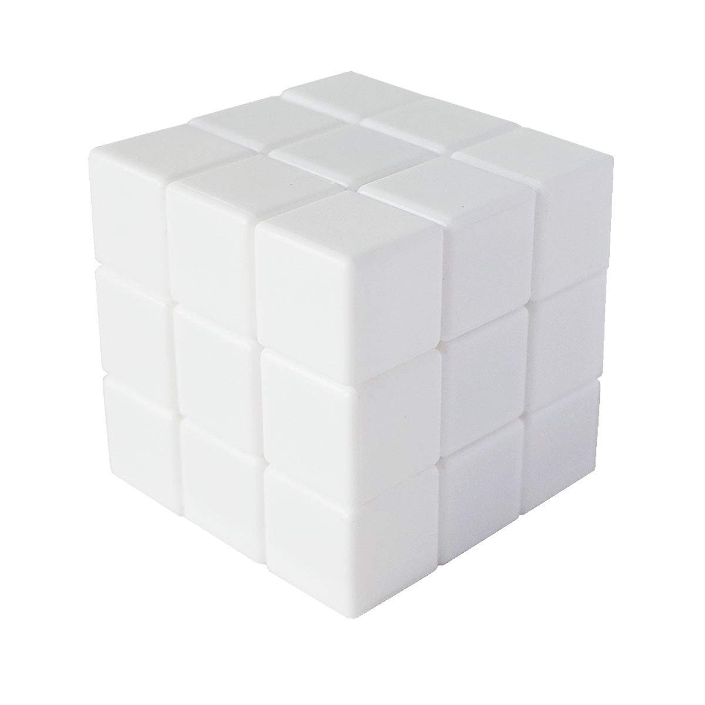
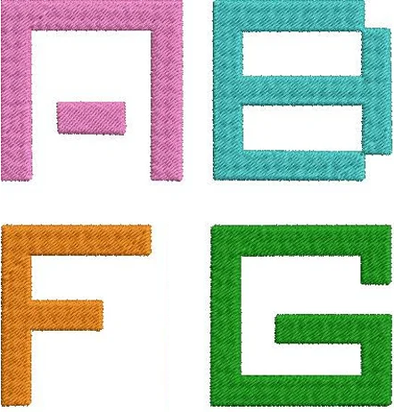

计算机图形学
第六章(3) 纹理坐标
将纹理坐标应用于物体
三维模型已经生成了UV坐标，GPU如何使用UV坐标？
GPU如何知道三角形内部各像素对应的UV坐标？

学习目标
- 解释如何将UV坐标作为顶点属性传递给GPU
- 定义纹理空间与其映射的二维纹理图案
贴纸
假设有一张贴纸和一个魔方


要将该贴纸完整地、不变形地贴到魔方的一个面上，需告诉计算机哪些信息？
贴纸
建立贴纸与魔方面之间的映射关系
- 左下角对应魔方面的左下角
- 右下角对应魔方面的右下角
- 右上角对应魔方面的右上角
- 左上角对应魔方面的左上角
“贴纸” --> 纹理；“贴纸坐标” --> 纹理坐标(UV坐标)
纹理空间
纹理不仅是一幅图像，有其独立的2D坐标系，称为“纹理空间”
- 纹理空间的横轴称为U轴，范围通常是[0,1]
- 纹理空间的纵轴称为V轴，范围通常是[0,1]

纹理上的任意一点，都可以用$(u,v)$坐标表示，称$(u,v)$坐标为纹理坐标
传递顶点纹理坐标
纹理坐标作为顶点的属性，与顶点的位置$(x,y,z)$和法线$(nx,ny,nz)$一起传递给GPU
struct Vertex {
vec3 Position; // (x, y, z)
vec3 Normal; // (nx, ny, nz)
vec2 TexCoords; // (u, v) <-- 这是新的！
};

为模型的每个顶点指定一个$(u,v)$坐标
从顶点到内部
对三角形内部的像素点$P$，其UV坐标通过插值计算得到
利用"重心坐标插值"，和Gouraud着色的颜色插值方式一样
$$ P_{uv}=\alpha V0_{uv}+\beta V1_{uv}+\gamma V2_{uv}, \alpha+\beta+\gamma=1 $$
GPU会在光栅化阶段自动完成插值
纹理坐标示例Demo
- 场景 1 (拉伸):
- 将右上角 V2 的 U 从 1.0 改为 0.5
- 将右下角 V1 的 U 从 1.0 改为 0.5
- 场景 2 (重复/平铺):
- 将右上角 V2 的 U,V 改为 (2.0, 2.0)
- 将右下角 V1 的 U 改为 2.0
- 将左上角 V3 的 V 改为 2.0
课堂测试
这是一个$4\times 4$的字母纹理，请为四边形的四个顶点$(v_0-v_3)$分配UV坐标，使其只显示字母F

四边形顶点
- v0(左下)
- v1(右下)
- v2(右上)
- v3(左上)
答案：
F 位于 (U: 0.0 到 0.5, V: 0.0 到 0.5) 区域
V0 (左下): (0.0, 0.0)
V1 (右下): (0.5, 0.0)
V2 (右上): (0.5, 0.5)
V3 (左上): (0, 0.5)
课堂总结
- 纹理坐标(U, V) 是连接2D纹理和3D顶点的桥梁
- GPU使用重心插值 来自动填充内部像素的纹理坐标